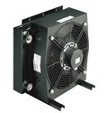
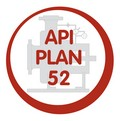
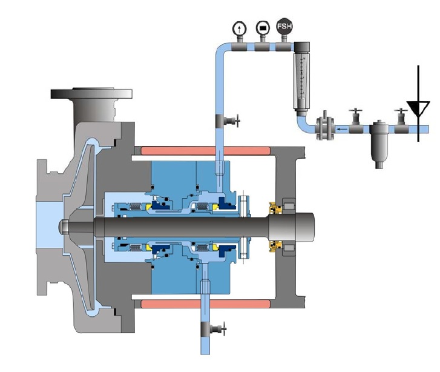

AES-15™
AES-15™ – система термосифонного типа для обеспечения работы торцевого уплотнения, работающая под давлением сжатого газа.
Предельные условия работы:
Температура: до +100°С;
Давление: до 30 бар;
Объем бачка: 15 литров;
Подробнее
AES-FV™
AES-FV™ – система термосифонного типа для обеспечения работы торцевого уплотнения, работающая под давлением сжатого газа.
Предельные условия работы:
Температура: до +100°С;
Давление: до 30 бар;
Объем бачка: 15 литров;
Подробнее
SWM™
SWM™ – система термосифонного типа для обеспечения работы торцевого уплотнения, работающая под давлением водопроводной воды.
Предельные условия работы:
Температура: 0°С - +80°С;
Давление: до 6 бар;
Объем бачка: 10, 12 литров;
Подробнее
SW2™
SW2™ – система термосифонного типа для обеспечения работы торцевого уплотнения, работающая под давлением водопроводной воды.
Предельные условия работы:
Температура: 0°С - +80°С;
Давление:
Установочное до 6 бар;
Максимально допустимое до 10 бар;
Объем бачка: 10, 25 литров;
Подробнее
SW3™
Описание:
SW3™ – система термосифонного типа для обеспечения работы торцевого уплотнения, работающая под давлением водопроводной воды.
Предельные условия работы:
Температура: 0°С - +80°С;
Давление:
Установочное до 6 бар;
Максимально допустимое до 10 бар;
Объем бачка: 10, 25 литров;
Подробнее
SWP™
SWP™ – система термосифонного типа для обеспечения работы торцевого уплотнения, работающая под давлением водопроводной воды.
Предельные условия работы:
Температура: 0°С - +80°С;
Давление: до 6 бар;
Объем бачка: 10, 12 литров;
Подробнее
SP1™
SP1™ – система термосифонного типа для обеспечения работы торцевого уплотнения. Используется как буферная емкость для смазки и охлаждения торцевого уплотнения.
Предельные условия работы:
Температура: -20°С - +100°С;
Давление: до 10 бар;
Объем бачка: 12, 25 литров;
Подробнее
SP2™
SP2™ – система термосифонного типа для обеспечения работы торцевого уплотнения, работающая под давлением сжатого газа.
Область применения:
SP2™ используется вместе с обвязкой по API плану 53А;
Наиболее часто используется с двойными торцевыми уплотнениями CDSA™ и DMSF™;
Подробнее
SP3™
SP3™ – система термосифонного типа для обеспечения работы торцевого уплотнения, работающая под давлением сжатого газа.
Предельные условия работы:
Температура: -20°С - +100°С;
Давление: до 10 бар;
Объем бачка: 12, 25 литров;
Подробнее
SWFF-TF™
SWFF-TF™ – система термосифонного типа для обеспечения работы торцевого уплотнения, работающая под давлением водопроводной воды, с автоматическим отключением подпитки при кратковременном отказе или выходе из строя пары трения.
Предельные условия работы:
Температура: 0°С - +80°С;
Давление:
Установочное до 6 бар;
Максимально допустимое до 10 бар;
Объем бачка: 10, 25 литров;
Подробнее
SWC™
SWC™ – система термосифонного типа для обеспечения работы торцевого уплотнения. Разработана для оборудования перекачивающего промышленный конденсат.
Предельные условия работы:
Температура: до +100°С;
Давление:
Для бачка 12 литров 10 бар;
Для бачка 15 литров 30 бар;
Для бачка 25 литров 10 бар;
Объем бачка: 12, 15, 25 литров;
Подробнее EasyClean™
EasyClean™ – бачок быстроразъемного типа, предназначенный для использования в системах термосифонного типа. Разработан специально для отраслей промышленности, в которых важно поддерживать высокий уровень чистоты в обвязке.
Предельные условия работы:
Температура: от-20°Сдо +60°С;
Давление: до 10 бар;
Объем бачка: 10 литров;
Подробнее AES-28™
AES-28™ – система термосифонного типа для обеспечения работы торцевого уплотнения, разработанная в соответствии со стандартом API 682.
Предельные условия работы:
Температура: до +100°С;
Давление: до 45 бар;
Объем бачка: 28 литров;
Подробнее
AES-12™
AES-12™ – система термосифонного типа для обеспечения работы торцевого уплотнения, разработанная в соответствии со стандартом API 682.
Предельные условия работы:
Температура: до +100°С;
Давление: до 45 бар;
Объем бачка: 12 литров;
Подробнее
AES-28-FV™
AES-28-FV™ – система термосифонного типа для обеспечения работы торцевого уплотнения, разработанная в соответствии со стандартом API 682.
Предельные условия работы:
Температура: до +100°С;
Давление: до 45 бар;
Объем бачка: 28 литров;
Подробнее Система по API плану 53B
Система по плану API 53B – готовое решение компании AESSEAL для обвязки по API плану 53B. Система обеспечения работы торцевого уплотнения разработана в соответствии со стандартом API 682 иприменяется для различных условий эксплуатации благодаря широкому ряду дополнительной аппаратуры.
Предельные условия работы:
Температура: до +100°С;
Давление: до 66 бар;
Объем аккумулятора: 20, 35 л;
Подробнее FLOWTRUE®
FLOWTRUE® – серия регуляторов расхода производства компании AESSEAL для работы с сальниковой набивкой и двойными торцевыми уплотнениями по планам API 32 и API 54 . Данное устройство обеспечивает постоянный подвод жидкости для смазки и охлаждения уплотнения.
Предельные условия работы:
Расход: 0,5 - 15 л/мин;
Давление: от 0 - 25 бар;
Подробнее PP-01™
PUMPAC-01™ – система обеспечения работы торцевого уплотнения с принудительной циркуляцией охлаждающей жидкости. Система была разработана в соответствии с требованиями плана API 54, который позволяет максимально отводить тепло при работе насоса в тяжелых условиях. Система PP-01™ применяется для различных условий эксплуатации благодаря широкому ряду дополнительной аппаратуры.
Предельные условия работы:
Температура: -20°С - +100°С;
Давление: до 16 бар;
Объем бачка: 45 литров;
Тип жидкости: масло;
Подробнее
PP-SOU™
PUMPAC-SOU™ – система обеспечения работы торцевого уплотнения с принудительной циркуляцией охлаждающей жидкости. Система была разработана в соответствии с требованиями плана API 54, который позволяет максимально отводить тепло при работе насоса в тяжелых условиях. Система PP-SOU™ применяется для различных условий эксплуатации благодаря широкому ряду дополнительной аппаратуры.
Предельные условия работы:
Температура: -20°С - +100°С;
Давление: до 16 бар;
Объем бачка: 45 литров;
Тип жидкости: масло;
Подробнее
FDU™
FDU™ – распределительная система с принудительной циркуляцией жидкости PUMPAC™, разработанная специально для работы по плану API 54 .
Предельные условия работы:
Температура: -20°С - +100°С;
Давление: до 16 бар;
Объем бачка: 180 литров;
Тип жидкости: вода, масло;
Подробнее
GAS10™
Производство:
Великобритания
Файлы для загрузки
Бланк заказа Системы обеспечения работы уплотнений
Каталог GAS
Каталог Системы
Описание:
GAS10™ – газовая панель для обеспечения работы торцевых уплотнений, работающих на сухую, в случаях недопустимости применения затворной или барьерной жидкости. Панель может быть укоплектована различными датчиками.
Предельные условия работы:
Давление: до 16 бар;
Подробнее Теплообменник проточного типа
Теплообменник проточного типа AESSEAL поставляются со спиралью выполненной из нержавеющей стали 316 серии в литом корпусе.
Предельные условия работы:
Температура: до +232°С;
Давление:
Для спирали до 69 бар;
Для бачка до 6.1 бар;
Подробнее
Теплообменники AES682C (по стандарту API 682)
AES682C™ – теплообменник спроектированный в соответствии с требованиями стандарта API 682. Состоит из быстроразъемного бачка и сердечника обвитого спиральной трубкой. Конструкция спирали представляет собой две концентричные трубки, вставленные одна в другую. В бачок заливается охладитель, а по спирали циркулирует барьерная, затворная либо промывочная жидкость.
Предельные условия работы:
Температура:
Для спирали до 200°С;
Для бачка до 80°С;
Давление:
Для спирали до 200 бар;
Для бачка до 16 бар;
Подробнее Спиралевидные оребренные теплообменники Python
Python™ – спиралевидный оребренный теплообменник компании AESSEAL спроектированный для эффективного охлаждения затворной, барьерной либо промывочной жидкостей.
Охлаждение происходит за счет конвективного эффекта. Тепло рассеивается ребрами теплообменника.
Предельные условия работы:
Температура: до +200°С;
Давление: до 58,3 бар
Подробнее Воздушные теплообменники Air Blast
AirBlast™ – теплообменник воздушного типа.
Предельные условия работы:
Теплоотвод: до 5 кВт;
Давление: 16 бар;
Подробнее 
API план 01
По API плану 01 реализуется внутренняя циркуляция жидкости между сальниковой камерой и линией нагнетания, через соединительный канал.
Подробнее
API план 02
API план 02 реализуется в "глухих" сальниковых камерах без циркуляции промывочной жидкости.
Подробнее
API ПЛАН 11
По API плану 11 реализуется циркуляция жидкости между линией нагнетания и сальниковой камерой.
Подробнее
API ПЛАН 12
По API плану 12 реализуется циркуляция продукта между линией нагнетания и сальниковой камерой через фильтр грубой очистки
Подробнее
API ПЛАН 13
По плану API 13 реализуется циркуляция жидкости между линией всасывания и сальниковой камерой через фильтр грубой очистки.
Подробнее API ПЛАН 14
По API плану 14 реализуется циркуляция жидкости между линией нагнетания и линией всасывания через сальниковую камеру.
Подробнее
API ПЛАН 21
По API плану 21 реализуется циркуляция продукта между линией нагнетания и сальниковой камерой через теплообменник.
Подробнее
API ПЛАН 22
По API плану 22 реализуется циркуляция продукта между линией нагнетания и сальниковой камерой через теплообменник и фильтр грубой очистки.
Подробнее API ПЛАН 23
По API плану 23 реализуется циркуляция продукта в сальниковой камере через теплообменник.
Подробнее
API ПЛАН 31
По API плану 31 реализуется циркуляция продукта между линией нагнетания и сальниковой камерой через сепаратор циклонного типа.
Подробнее
API ПЛАН 32
По API плану 32 реализуется подвод чистой промывочной жидкости в сальниковую камеру от внешнего источника.
Подробнее
API ПЛАН 41
По API плану 41 реализуется циркуляция продукта между линией нагнетания насоса и сальниковой камерой через циклонный сепаратор и теплообменник.
Подробнее
API ПЛАН 51
По API плану 51 реализуется подача барьерной охлаждающей жидкости в уплотнение от внешнего бачка без вынужденной циркуляции.
Подробнее API ПЛАН 52
По API плану 52 реализуется циркуляция барьерной охлаждающей жидкости при давлении близком к атмосферному между внутренней полостью уплотнения и внешним бачком системы обеспечения. В состоянии бездействия отвод тепла происходит за счет конвективного эффекта, а в рабочем состоянии за счет встроенного импеллера.
Подробнее 
API ПЛАН 53А
IASC™ - семейство одинраных торцевых уплотнений картриджного типа для герметизации рафинёров, сортировщиков и другого оборудования целлюлозно-бумажной
Подробнее API план 53В
По API плану 53В реализуется циркуляция затворной жидкости под давлением между внутренней полостью уплотнения и внешним бачком системы обеспечения. В состоянии бездействия отвод тепла происходит за счет конвективного эффекта, а в рабочем состоянии за счет встроенного импеллера. Давление в контуре уплотнения поддерживается за счет пневмоаккумулятора.
Подробнее
API план 53C
По API плану 53C реализуется циркуляция затворной жидкости под давлением между внутренней полостью уплотнения и внешним бачком системы обеспечения. В состоянии бездействия отвод тепла происходит за счет конвективного эффекта, а в рабочем состоянии за счет встроенного импеллера. Требуемое давление в контуре уплотнения поддерживается за счет поршневого аккумулятора SMARTRACK.
Подробнее
API план 54
По API плану 54 реализуется принудительная циркуляция под давлением затворной жидкости между внутренней полостью уплотнения и внешним бачком системы обеспечения с помощью насоса (AESSEAL® PUMPPAC™).
Подробнее
API ПЛАН 61
В плане API 61 все каналы подачи жидкости в уплотнение заглушены для последующего использования с планами API 62 и API 65 .
Подробнее
API ПЛАН 62
По API плану 62 реализуется непрерывная подача и слив охлаждающей жидкости в дренажную систему предприятия (QuenchtoDrain).
Подробнее API план 65
API план 65 позволяет определить объем утечек через торцевое уплотнение. В случае пробивания пары трения внешний бачок обвязки оснащен сигнализатором верхнего уровня, который сработает сразу как только уровень жидкости в бачке увеличится.
Подробнее
API план 65
API план 65 позволяет определить объем утечек через торцевое уплотнение. В случае пробивания пары трения внешний бачок обвязки оснащен сигнализатором верхнего уровня, который сработает сразу как только уровень жидкости в бачке увеличится.
Подробнее API ПЛАН 71
В плане API 71 все каналы подачи жидкости в уплотнение заглушены для последующего использования с затворным газом.
Подробнее
API план 72
По API плану 72 реализуется подача барьерного газа в герметичную камеру уплотнения для изоляции внешней пары трения от продукта, парящего через внутреннюю пару трения, либо для разбавления продукта.
Подробнее

API план 74
По API плану 74 реализуется подача затворного газа через газовую панель в камеру уплотнения. В качестве затворного газа применяется инертный газ, например, азот.
Подробнее
API ПЛАН 75
По API плану 75 реализуется улавливание паров и конденсата внутренней пары трения и их отвод в коллектор.
Подробнее
API ПЛАН 76
По API плану 76 пары продукта, проходящие через внутреннюю пару трения двойного герметичного уплотнения перенаправляются в систему улавливания паров.
Подробнее
HEATGUARD (ТЕПЛОЗАЩИТНЫЙ КОЖУХ)
HeatGuard™ – теплозащитный кожух для бачков. Рабочая температура кожуха на 40°С ниже чем рабочая температура бачка.
Подробнее
ICEGUARD (СИСТЕМА ЗАЩИТЫ ОТ ЗАМЕРЗАНИЯ)
IceGuard™ - устройство предотвращающее замерзание жидкости в обвязке. Устанавливается на линиях подачи жидкости в бачок и в уплотнение. Срабатывает автоматически.
Подробнее LDU (СИТЕМА УЛАВЛИВАЮЩАЯ УТЕЧКИ)
LDU™ – бачок для улавливания утечек продуктовой среды в планах обвязки API 75 и API 76.
Подробнее
LDV (СИТЕМА УЛАВЛИВАЮЩАЯ УТЕЧКИ)
LDV™ – бачок для улавливания утечек продуктовой среды в обвязке по API плану 65 .
Подробнее
ЦИКЛОННЫЙ СЕПАРАТОР CYCL™
Циклонный сепаратор CYCL™- устройство для отсеивания твердых включений из продуктовой жидкости.
Подробнее